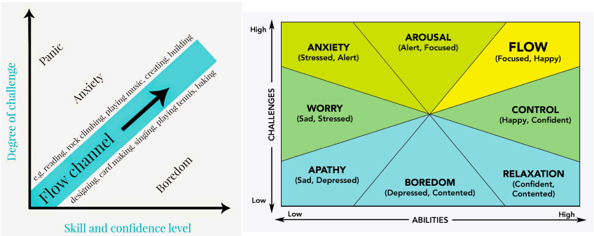

Summary of Psychoanalytic Approach
Freud 이론
행동의 "실제" 이유는 종종 의식하지 못한 동기에 있음 / 초기 유가기 경험의 영향
- 어린 시절의 경험이 미래 성격을 결정
- 심리적 결정론 (행동은 개인이 알지 못하는 힘에 의해 움직임)
- 정신적 갈등 (마음 요소가 본능을 관리하기 위해 서로 경쟁)
- 정신 에너지 (정신은 작동하기 위해 필요, 정신에너지는 보존됨)
Basic Assumptions
- 인간은 갈등에 휩싸이고 id에 이끌리는 존재
- 어린 시절의 경험이 성격을 결정
- 인간 본성에 관한 문제는 얼마나 해결 가능한가
Freud’s Dark View of Human Nature
-
- 포괄적
- 의식하지 못한 과정을 설명
- 설득력
강점
-
- 실험이 어려움
- 이론이 성차별적이거나 이성애중심적일 수 있음
- 성적 충동에 대한 과대 강조
- 지나치게 부정적인 인간 본성의 견해
비판
프로이트의 이론 평가
Humanistic and positive approach
Basic Assumptions
- Phenomenology
- Existentialism
- Humanism
Phenomenology
주관적 경험에 중점 및 현재를 중심
사람들마다 현실을 다르게 경험 / 주관적 현실은 성격을 이해하는 데 있어서 객관적 현실보다 중요
Existentialism
존재주의 = 존재에 중점을 둔 것과 인간이 무엇을 해야 하는가에 중점
목적: 인식을 강조하고 살아있는 존재의 경험과의 접촉을 회복
Thrown-ness
: 당신이 태어나게 된 시간, 장소 및 상황 / 경험의 중요한 기초
The Religion Paradox(종교의 역설) : 종교 -> 행복증진 그러나 종교를 떠남 / 어려운 생활조건 더 종교적, 더 유리한 환경에서 종교성 덜 흔함
가난한 국가에서 더 큰 삶의 의미 : 삶의 만족도는 부유한 국가에서 가난한 국가보다 상당히 높았지만, 삶의 의미는 가난한 국가에서 부유한 국가보다 높음 (why? A: 종교)
Angst
: 삶의 의미와 시간을 어떻게 보내야 하는지를 고려함으로써 일어나는 불쾌한 감정
- 고통 (Anguish): 선택은 결코 완벽하지 않기 때문에 모든 사람이 느낌
- 외로움 (Forlornness): 각 개인은 개인의 선택을 해야 함
- 절망 (Despair): 많은 결과가 통제할 수 없다는 인식
Terror Management Theory
죽음의 불가피성 / 자존감 및 문화적 가치를 죽음에 대한 두려움을 극복하는 방법으로 여김
매춘부에게 무거운 형벌 / 체포에 도움을 준 여성에게 더 큰 보상
Humanism
인본주의 = 인간의 존엄성과 가치를 강조 / 사람들은 기본적으로 선하다고 가정
Abraham Maslow
Big Ideas : Hierarchy of Needs / 결핍욕구 Deficiency Needs(D - Needs) / 존재욕구 Being Needs(B - Needs)
자기실현(Self-Actualization) : 스스로가 가능한 모든 것이 되기를 원하는 욕망
진정한 인간의 잠재력을 표현하거나 표현할 수 있는 능력, 그리고 실제로 자기 자신이 되는 것 / 자아실현 욕구는 가장 약함 / 다른 욕구의 충족 필요
-
강점
- 직관적인 동기 이론
- 건강한 성격에 중점
- 인간의 능동성에 중점
-
약점
- 검증 가능성
- 주관성
- 경험적 지지
Carl R. Rogers
- 실현 경향성(Actualization Tendency) : 자아를 실현하고 유지, 강화하려는 기본적인 인간 동기
- 유기적 가치 판단 과정(Organismic Valuing Process): 경험을 자아실현을 촉진하거나 방해하는 가치로 판단하는 과정
주요 개념
Development of Personality Adjustment
-
인간은 긍정적인 경험(positive regard)에 대한 필요성이 있음 (출처 불분명 / 보편적, 지속적)
-
인간의 발전은 무조건적 긍정적 경험에 의해 촉진 (양육 방법 / 개인적인 관계)
-
가치에 조건을 두는 것은 일반적으로 좋지 않음 - 조건적 긍정적 경험 (동의, 사랑 또는 수용은 사람이 바람직한 행동과 태도를 표현할 때에만 부여)
Carl rogers’ personality theory

Fully Functioning Persons
- 경험에 열려 있음
- 자기 자신을 신뢰함 (자신의 감정과 판단을 신뢰 / 자기에게 무조건적인 긍정적 경험을 줌)
- "좋은 삶"을 살아감 (선택의 자유 / 창의성 / 신뢰성 있는)
- 항상 행복하거나 행복하거나 만족스럽지는 않음 / Maslow’s 자아실현 개념과 비교됨
Key Aspects of Rogerian Therapy
- 변화를 추구
- 성실한 자에게 치료자는 무조건적 긍정적 경험을 보여줌
- 성격 변화는 치료 과정에서 점진적으로 발생
Evaluating Rogers
-
강점
- 치료의 효과에 대한 경험적 접근
- 치료 및 심리학 이외의 교육과 같은 다른 분야에 큰 영향을 미침
-
약점
- 주관성에 너무 많은 중점 / 너무 단순?
- 인간의 본성에 대한 이견이 너무 낙천적
- 정신 건강에 대한 생각은 자신이 원하는 대로의 인간이라고 믿는 것 이상인가?
George Kelly (1905-1967)
- 인간을 인간 본성의 이론가로 봄
- 건설적 대안주의 (Constructive Alternativissm): 사람들은 세상을 다르게 해석할 수 있음 / 사람을 이해하려면 그가 세상을 어떻게 해석하는지를 이해해야 함
- 기본 전제: 사람의 과정은 그가 사건을 어떻게 예측하는가에 따라 심리적으로 결정됨
Basics
People Process Information in “Biased" Ways
- 삶은 종종 모호한 자극을 제시하므로 우리는 이 정보를 우리의 선입견에 따라 해석
- Confirmation bias
- Self-fulfilling prophecies
따라서 어떤 의미에서는 우리는 자신만의 현실을 만들어 냄
Personal Constructs
- 우리가 경험을 어떻게 해석하는지를 안내 / 우리가 경험을 어떻게 설명하고 해석하며 의미를 부여하는 방식
- 성격은 개인적 구조체(Personal Constructs)에 의해 정의
Therapy for Kelly
- client’s personal constructs를 이해
- personal constructs를 탐색하고 개인이 이러한 구조체를 변경하도록 도움을 줌
- 이를 위한 접근법 (자기 성격 스케치 / 롤 플레잉 / 고정 역할 치료)
-
강점
- 인지 강조
- Unique 관점
- 개인에 중점
-
약점
- Constructs can be difficult to assess
- 너무 낙천적
Science of Well-Being and Happiness
Csikszentmihalyi: Flow
(칙센트미하이(Csikszentmihalyi)의 몰입이론 몰입(沒入)의 사전적 의미는 깊이 파고들거나 빠짐을 의미한다.)
Similar to peak experiences / 사람들이 자기목적적 활동에 시간을 보낼 때 발생 / 고도의 도전과 높은 기술 수준의 균형이 필요 / 좋은 작업 성과를 낳음
Includes : 집중, 약간 높아진 기분, 시간이 빠르게 지남
